Next: About this document ...
We consider the sequence of sparse matrix-matrix multiplications performed during the setup phase of algebraic multigrid. In particular, we show that the most commonly used parallel algorithm is often not the most communication-efficient one for all of the matrix multiplications involved. By using an alternative algorithm, we show that the communication costs are reduced (in theory and practice), and we demonstrate the performance benefit for both model and real problems on large-scale distributed-memory parallel systems.
We consider the smoothed aggregation multigrid method, and for this talk
we focus on a symmetric fine grid operator 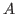 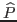 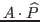 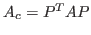 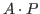 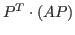 is computed by applying
a step of damped Jacobi to
, which is structurally
equivalent to computing the product
is computed by applying
a step of damped Jacobi to
, which is structurally
equivalent to computing the product
The standard approach for performing each of these parallel sparse matrix
multiplications is to use a row-wise algorithm: for general
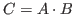 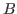
Because of its low arithmetic intensity, the performance of parallel
algorithms for sparse matrix multiplication is typically bound by the
cost of interprocessor communication.
Based on communication cost analysis of model problems, we conclude that
the row-wise algorithm is the right choice for computing
and but the outer-product is the better choice
for computing
.
For a fine grid operator corresponding to a 3D 27-point stencil on a
regular grid, for example, the row-wise algorithm for 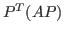 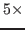 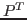
We have implemented the outer-product algorithm within the Trilinos software framework, and we compare communication costs and running times of the two approaches for representative matrices. To confirm the theoretical analysis, our experiments include regular-grid stencil matrices for 2D and 3D problems. We also perform tests on realistic problems, including a low Mach fluid dynamics application problem, to demonstrate the benefits of the new approach.